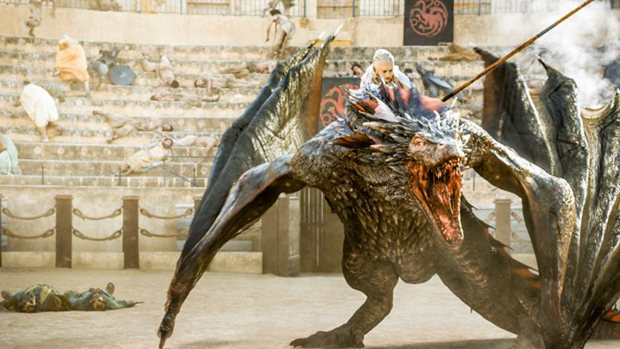

House of The Dragon, le premier spin-off de Game of Thrones, prévu pour 2022 ?
C’est le patron de HBO en personne, Casey Bloys, qui a partagé cette information très attendue dans une interview au média américain Deadline.
Proposé par George R.R Martin lui-même à HBO dès 2016, House of the Dragon est un des projets les plus ambitieux de la chaîne américaine. La série en est pour le moment à ses balbutiements, étant donné qu’elle n’a pas encore de casting ni de date officielle. Seule l’année 2022 a été évoquée par le patron de HBO, mais précisons que si le premier spin-off de Game of Thrones veut sa place aux Emmy Awards 2022, il doit être diffusé au cours du premier semestre de l’année en question. Bref, House of the Dragon pourrait arriver dans une petite année et demi. Les informations autour du projet sont parcellaires mais néanmoins très parlantes. House of the Dragon devrait se concentrer sur le règne de la dynastie Targaryen sur Westeros et donc se dérouler environ 300 ans avant les événements de Game of Thrones. Les dix épisodes qui composeront la saison 1 sont déjà commandés, et le tournage devrait commencer en 2021. Le casting est néanmoins totalement inconnu, même si l’on sait que la chaîne recherche depuis juillet deux actrices (probablement pour interpréter Rhaenyra Targaryen et Alicent Hightower) et depuis août un acteur (qui jouerait quant à lui Daemon Targaryen). Le spin-off va principalement s’appuyer sur Feu et Sang et plus précisément sur la Danse des Dragons, une guerre du succession entre les ancêtres de Daenerys Targaryen. Nul doute que la série mettra en scène des batailles épiques où des dragons vont s’affronter jusqu’à la mort. C’est d’ailleurs probablement pour cette raison que Miguel Sapochnik, connu pour avoir réalisé des épisodes de grandes batailles dans Game of Thrones (« La Bataille des Bâtards » et « La Longue Nuit »), partage la responsabilité de showrunner avec Ryan Condal. [...]
Lien vers la source.